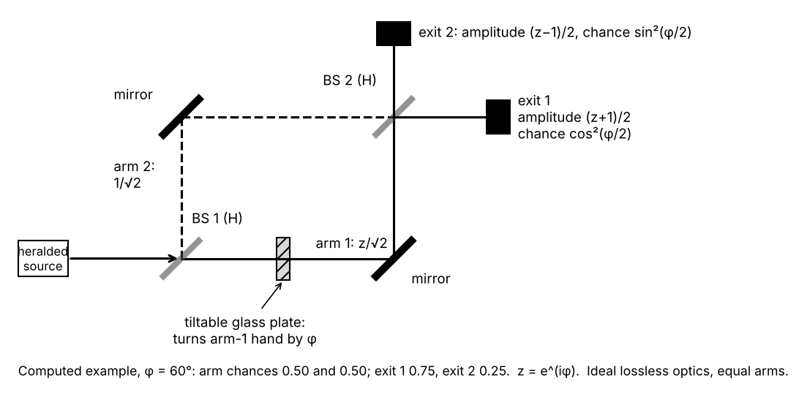
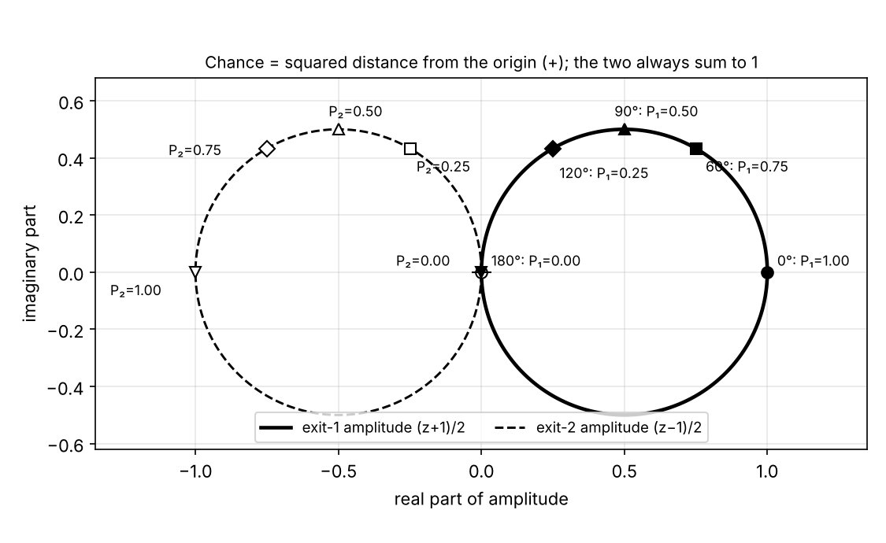
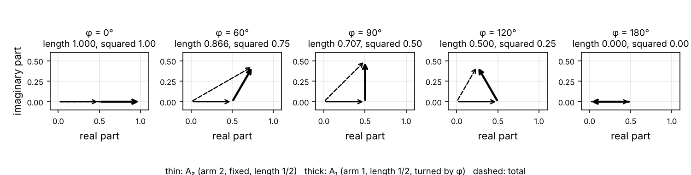
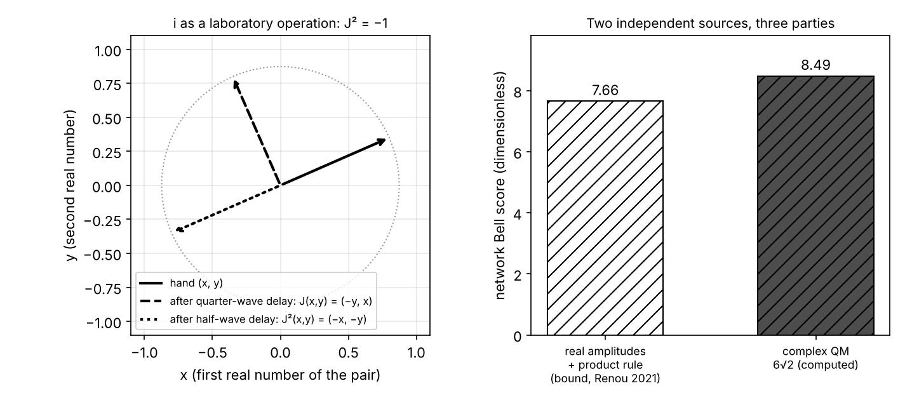

Put a thin glass plate in one arm of an interferometer and send photons through one at a time: as you tilt the plate, the share of photons leaving by each exit sweeps smoothly from all to none and back (all the way in the ideal lossless case; the 1986 fringes had 98% visibility, which leaves a floor of about 1% of the peak), while a counter placed in that arm alone registers the same number whatever the tilt. Those two facts are the shortest experimental route to both halves of your question. The plate touches one arm only and leaves that arm's own count alone, so all it can do is multiply that arm's amplitude by a number of size 1. If an amplitude were a single real number, that number could only be $+1$ or $-1$, and the exits could show only two patterns, never a smooth sweep. So one real number per arm is not enough: each arm needs at least two, and the plate turns them like a clock hand with a fixed length. The simplest object of that kind is a complex number, and it is what quantum mechanics uses; richer choices (quaternions, four real numbers per arm) also pass this test and are constrained by other experiments, and for a single system a theory of real pairs that carries a fixed "pairing" matrix along is the same theory in different notation (both points below). For the square: the whole device, plate included, is a family of lossless linear maps that moves chance from one exit to the other gradually. If the chance were $|\text{amplitude}|^p$, then for every power $p$ other than 2 the only lossless linear maps are relabellings of the exits (worked out below for two exits; a theorem of Banach and Lamperti in general), and a relabelling cannot move chance gradually; so among power rules the tilting plate leaves only $p=2$. Everything below does these two calculations in full with $2\times 2$ matrices you can multiply yourself, then says which parts are measurement, which are mathematics, which are postulates and which are still argued over.
The set-up. A Mach–Zehnder interferometer. A beam splitter is a half-silvered mirror: a glass plate with a thin coating that reflects half the light and transmits half. The first splitter divides the incoming beam into two arms; a mirror in each arm sends the beams back together on a second splitter; a detector sits at each of its two exits, call them exit 1 and exit 2. The two arms are made equal in length to within a fraction of a wavelength. In arm 1 sits a thin glass plate that can be tilted. Light travels more slowly in glass, and tilting the plate lengthens the path inside it, so the arm's optical path (the length that counts for a wave: geometric length times refractive index) grows smoothly with the tilt; moving one mirror on a piezoelectric mount does the same job, and the counts are the same function of the extra path either way. The photons come one at a time: the source emits them in pairs (in 1986 from a two-step emission, a "cascade", in calcium atoms; today usually from a crystal), and detecting one photon of a pair announces, heralds, that its partner is on its way, so a count is kept only when a partner was announced. With rare exceptions (two pairs emitted within the same time window) there is then at most one photon in the apparatus; often there is none, because the announced partner missed the collecting optics or went undetected (the cascade sends the partner off in a direction only loosely tied to the herald's), and that is why the double-firing test in (a) below divides the coincidence rate by the product of the single rates instead of counting photons one by one. Grangier, Roger and Aspect did this in 1986. The same has been done with neutrons: a single silicon crystal cut into three parallel slabs (Rauch, Treimer and Bonse, 1974) splits a neutron beam two ways, redirects the two beams and recombines them, with the arms a few centimetres apart; the beam is so weak that there is almost never more than one neutron inside at a time; a slab of aluminium that can be turned changes the path through metal for one beam relative to the other, which plays the role of the glass plate. Idealizations used in all the numbers below: lossless splitters, mirrors and plates; splitters that divide exactly half and half; detectors that miss nothing; one wavelength; one particle at a time.

What is seen. Write $\varphi$ for the plate's setting, measured as an angle: $\varphi = 2\pi \times (\text{extra optical path})/(\text{wavelength})$, so one wavelength of extra path is one full turn, $2\pi$; count it from the tilt at which every photon leaves by exit 1.
(a) Each photon is counted at one exit or the other; in the ideal single-photon case the two detectors never fire together. The 1986 experiment tested this at a single splitter with a detector on each side, comparing the rate of double firings with the product of the two single rates; call the ratio $\alpha$. For light described as a classical wave, whose energy divides at the splitter and sets each detector's chance of firing, $\alpha$ is at least 1 (exactly 1 for a steady wave, higher for one whose intensity fluctuates). They measured $\alpha = 0.18 \pm 0.06$; for an ideal single photon $\alpha$ is zero, and the small residue comes mostly from the occasional two pairs in one time window.
(b) As the plate tilts, the fraction of photons at exit 1 sweeps smoothly from (ideally) 100% down to 0% and back up, repeating each time the extra optical path grows by one wavelength (each time $\varphi$ grows by $2\pi$); the fraction at exit 2 is the mirror image. The 1986 fringes had a visibility of 98% (visibility 100% would mean sweeping all the way from every photon to none).
(c) The two exits together account for every photon at every tilt: 100 + 0, 75 + 25, 50 + 50, 25 + 75. These are the ideal lossless numbers. Real losses lower the total; a loss in one arm alone also stops the minimum reaching zero, because the two arm hands no longer have equal length (with arm 1 passing a fraction $t$ of its photons, exit 1 runs between $(1+\sqrt t)^2/4$ and $(1-\sqrt t)^2/4$ and the two exits sum to $(1+t)/2$); and detectors of unequal efficiency weight the two exits unequally. Imperfections of these kinds, together with imperfect overlap of the two beams and a spread of wavelengths, are why real fringes stop short of zero, as the 98% of 1986 did.
(d) Two checks that are routine in interferometer work. Put a detector in arm 1 itself, behind the plate: it counts half the photons, and tilting the plate does not change that. Block arm 2 instead: each exit now receives one quarter of the photons, and again the tilt does not change that. (With neutrons, the counts in the two exit beams likewise rise and fall in opposition as the aluminium slab is turned, with a constant sum apart from losses, though the contrast of real crystal interferometers is well below 100%.)
![Ideal exit fractions against the plate phase φ, extra optical path in brackets. Exit 1 (bold) sweeps smoothly between 1 and 0 and repeats every 2π; exit 2 (thin) is its mirror image; their sum (dashed) is flat at 1; with arm 2 blocked either exit gets a flat 1/4 (dotted). The hollow circles mark the settings φ = 0, π, 2π, 3π at which one real number per arm could produce the observed fraction (1 or 0); φ = 4π at the right-hand edge is another such setting, not circled; nothing between 1 and 0 is available to it. Top right: the two arm hands, each of length 1/√2, at φ = 0, π/2 and π, arm 1's hand (thick) turned by φ, with the exit-1 fraction 1.0, 0.5, 0.0. Lossless optics, 50/50 splitters, perfect detectors, one wavelength.](figures/a-interferometer-counts.png)
Sources: Grangier, Roger & Aspect, Europhys. Lett. 1, 173 (1986): anticorrelation at a splitter and single-photon fringes; Rauch, Treimer & Bonse, Phys. Lett. A 47, 369 (1974): the first perfect-crystal neutron interferometer; Rauch & Werner, Neutron Interferometry, 2nd ed. (2015); Hecht, Optics, 5th ed. (2017), ch. 9 "Interference", §9.4 "Amplitude-Splitting Interferometers"; Thorn et al., Am. J. Phys. 72, 1210 (2004): the anticorrelation test as done in teaching laboratories.
What this rules out. Four pictures, against the four observations:
| Picture | (a) whole arrivals | (b) smooth sweep | (c) constant total | (d) arm count fixed; blocked arm gives ¼ each |
|---|---|---|---|---|
| Tiny balls, sent one way or the other at each splitter at random | passes | fails: 50/50 at every tilt, a delay cannot move a ball from one exit to the other | passes | passes |
| Chances only, no amplitudes: a chance for each route, added | passes | fails: exit 1 gets ¼ from each arm alone, so with both open it would get ¼ + ¼ = ½ at every tilt, yet at $\varphi=\pi$ it gets nothing | passes | passes |
| Classical real wave (light as in Maxwell's theory) | fails: the energy divides at the splitter and each detector fires at random with a chance set by its share, so double firings come at least as often as chance, $\alpha \ge 1$; measured $0.18$ | passes, as energy fractions | passes | passes |
| One real number per arm, combined and squared | passes | fails: only 100/0 or 0/100, see below | passes | passes |
The third row deserves a word, because it already contains a square and a continuous phase: a classical wave's energy goes as the square of its height, and a wave of one frequency is fixed by two numbers, its height and its timing, which engineers write as one complex number (a "phasor"). So complex numbers are not the exotic part. What the classical wave gets wrong is (a): it can only divide its energy, so faint light would set off both detectors together at least as often as chance would. The fourth row is the two-slit answer's rule read literally, one signed number per route. The plate is in arm 1 and cannot put light into arm 2, so in a rule where devices act on amplitudes it can only multiply arm 1's number by some factor $r$; (d) says the arm's count is unchanged, so $r^2 = 1$ and $r = +1$ or $-1$. With $+1$ every photon leaves by exit 1 (the $\varphi=0$ setting); with $-1$ every photon leaves by exit 2 (the sign flip is the half-wavelength delay, the same $-1$ that made the two-slit dark stripes). Nothing in between is available, and (b) shows everything in between. Notice what is not being said: a pair of real numbers can certainly be turned gradually (the polarizer answer's arrow was exactly that), but turning that arrow mixes its two components, and the plate cannot mix the arms. What survives is a hand per arm that the plate turns through an angle set by the extra path without changing its length: at least two real numbers per arm. The simplest object of that kind is a complex number, and that is what the models below use. Richer ones exist, such as quaternions (four real numbers with their own multiplication rule); they pass (a) to (d) just as well, and are constrained by other experiments: Peres pointed out in 1979 that with quaternion amplitudes two plates of different materials placed one after the other in the same arm could give different counts in the two orders, and a neutron test (Kaiser, George and Werner, 1984) and a photon test (Procopio and co-workers, 2017) found no such difference within their precision. (The neutron result sometimes quoted here, that a neutron's spin turned through 360° reverses the sign of its arm's amplitude and only 720° restores it, shows that the relative sign is physical; a sign is available to real numbers, so it does not by itself force the pair. The experiment does, though, sweep the magnetic field continuously, and the counts oscillate smoothly with a period of 720° of spin rotation, which is itself a hand turning continuously, not just a sign.)
![Left, observation (b): the exit-1 fraction each picture predicts. Tiny balls and chances-only both give a flat 1/2 (dashed); one real number per arm can produce only the three boxed settings; a complex pair per arm gives the smooth curve, and so does a classical wave's energy fraction. Right, observation (a): double firings of two detectors after one splitter divided by the product of the single rates, the ratio α, in a simple model where each detector fires with a chance proportional to its share of the energy. A steady classical wave gives 1.00 and a wave whose intensity fluctuates from pulse to pulse (exponentially distributed here) gives 2.01; no classical wave goes below the dotted line at 1; one ideal photon gives 0.](figures/a-rules-out.png)
Sources: Feynman, Leighton & Sands, The Feynman Lectures on Physics, Vol. III (2010), ch. 1 "Quantum Behavior", §1-2 to §1-5; Hecht, Optics, 5th ed. (2017), ch. 2 "Wave Motion", §2.5 "The Complex Representation" and §2.6 "Phasors and the Addition of Waves"; Rauch & Werner, Neutron Interferometry, 2nd ed. (2015), on the 720° experiment; Peres, Phys. Rev. Lett. 42, 683 (1979); Kaiser, George & Werner, Phys. Rev. A 29, 2276 (1984); Procopio et al., Nat. Commun. 8, 15044 (2017).
Model 1: a pair of complex numbers and $2\times 2$ matrices. This is standard quantum mechanics in its state-vector form, for a system with two places to be.
Intuition. The photon's state is a pair of complex numbers $(u, v)$: $u$ for arm 1 (or exit 1), $v$ for arm 2 (or exit 2). A complex number $z = x + iy$ is a hand: its length (modulus) is $|z| = \sqrt{x^2+y^2}$, its direction is the angle from the horizontal. Its conjugate is $\bar z = x - iy$, the hand mirrored in the horizontal, and the squared length is $|z|^2 = z\bar z = x^2 + y^2$. Write the hand of length 1 at angle $\varphi$ as $e^{i\varphi}$, shorthand for $\cos\varphi + i\sin\varphi$ (the name comes from Euler's formula; nothing below needs more than the shorthand). Multiplying by $e^{i\varphi}$ turns a hand by $\varphi$ without changing its length. Check: $e^{i\varphi}(x+iy) = (x\cos\varphi - y\sin\varphi) + i(x\sin\varphi + y\cos\varphi)$, which is the point $(x,y)$ rotated by $\varphi$, and its squared length is $(x\cos\varphi - y\sin\varphi)^2 + (x\sin\varphi + y\cos\varphi)^2 = x^2\cos^2\varphi - 2xy\cos\varphi\sin\varphi + y^2\sin^2\varphi + x^2\sin^2\varphi + 2xy\sin\varphi\cos\varphi + y^2\cos^2\varphi = x^2 + y^2$. The rule for chances: the chance of exit 1 is $|u|^2$, of exit 2 is $|v|^2$, with $|u|^2 + |v|^2 = 1$. A lossless element with two ways in and two ways out is a $2\times 2$ matrix acting on the pair: it takes $(u,v)$ to $(au + bv,\ cu + dv)$, which is the statement that amplitudes add (what the element does to a sum of two states, it does to each and adds).
The three matrices. The beam splitter is $$H = \frac{1}{\sqrt 2}\begin{pmatrix} 1 & 1 \\ 1 & -1\end{pmatrix}, \qquad H\binom{u}{v} = \frac{1}{\sqrt 2}\binom{u+v}{u-v}.$$ In words: each output is an equal mix of the two inputs, and one output carries a sign change. Losslessness forces some relative turn between the four routes through a splitter (two reflections, two transmissions): with real entries it shows up as this one minus sign; another common convention multiplies each reflection by $i$ instead, $\frac{1}{\sqrt2}\begin{pmatrix}1&i\\i&1\end{pmatrix}$, which has no minus sign at all. Any lossless choice gives the same counts, with the fringe shifted by a constant that I absorb into $\varphi$ (the $i$ convention shifts it by $\pi$). Without any such turn, $\frac{1}{\sqrt2}\begin{pmatrix}1&1\\1&1\end{pmatrix}$ would send the input $(1,-1)/\sqrt2$ to $(0,0)$: zero chance at both exits for a photon that must come out somewhere, so it cannot describe a lossless device. Check that $H$ keeps the total chance: $|u+v|^2 + |u-v|^2 = (u+v)(\bar u+\bar v) + (u-v)(\bar u-\bar v) = |u|^2 + u\bar v + \bar u v + |v|^2 + |u|^2 - u\bar v - \bar u v + |v|^2 = 2|u|^2 + 2|v|^2$; dividing by the $(\sqrt2)^2 = 2$ from the prefactor gives $|u|^2 + |v|^2$. A matrix that keeps $|u|^2+|v|^2$ for every pair is called unitary; for real entries that is a rotation or a reflection, and $H$ is a reflection. The plate in arm 1 is $$P(\varphi) = \begin{pmatrix} z & 0 \\ 0 & 1\end{pmatrix}, \qquad z = e^{i\varphi},$$ which turns arm 1's hand by $\varphi$ and leaves arm 2 alone; $|z| = 1$ is observation (d). Two identical mirrors multiply both arms by the same number of size 1, which changes no count, so I leave them out.
The calculation. The photon enters by one input port: $(1, 0)$. Through the first splitter: $H(1,0) = (1,1)/\sqrt2$, half the chance in each arm, since $|1/\sqrt2|^2 = \tfrac12$. Through the plate: $(z, 1)/\sqrt2$. Through the second splitter: $H(z,1)/\sqrt2 = \tfrac12\,(z+1,\ z-1)$. So the amplitude at exit 1 is $(z+1)/2$ and at exit 2 is $(z-1)/2$. With $z = \cos\varphi + i\sin\varphi$: $$|z+1|^2 = (1+\cos\varphi)^2 + \sin^2\varphi = 1 + 2\cos\varphi + \cos^2\varphi + \sin^2\varphi = 2 + 2\cos\varphi,$$ $$|z-1|^2 = (\cos\varphi - 1)^2 + \sin^2\varphi = 2 - 2\cos\varphi.$$ Using $\cos\varphi = \cos^2(\varphi/2) - \sin^2(\varphi/2)$ and $1 = \cos^2(\varphi/2) + \sin^2(\varphi/2)$, we get $1 + \cos\varphi = 2\cos^2(\varphi/2)$ and $1 - \cos\varphi = 2\sin^2(\varphi/2)$, so $$P_1 = \frac{|z+1|^2}{4} = \cos^2\frac{\varphi}{2}, \qquad P_2 = \frac{|z-1|^2}{4} = \sin^2\frac{\varphi}{2}, \qquad P_1 + P_2 = 1 \text{ for every } \varphi.$$ Whole device in one matrix, for later: $U(\varphi) = H\,P(\varphi)\,H = \tfrac12\begin{pmatrix} z+1 & z-1 \\ z-1 & z+1\end{pmatrix}$ (multiply it out: $P H = \frac{1}{\sqrt2}\begin{pmatrix} z & z \\ 1 & -1\end{pmatrix}$, then $H(PH)$ gives the entries shown).
| $\varphi$ | $z = \cos\varphi + i\sin\varphi$ | $(z+1)/2$ | $P_1 = \lvert(z+1)/2\rvert^2$ | $(z-1)/2$ | $P_2$ | $P_1+P_2$ |
|---|---|---|---|---|---|---|
| 0 | $1$ | $1$ | $1$ | $0$ | $0$ | 1 |
| 60° | $0.500 + 0.866i$ | $0.750 + 0.433i$ | $0.5625 + 0.1875 = 0.75$ | $-0.250 + 0.433i$ | $0.0625 + 0.1875 = 0.25$ | 1 |
| 90° | $i$ | $0.5 + 0.5i$ | $0.25 + 0.25 = 0.50$ | $-0.5 + 0.5i$ | $0.50$ | 1 |
| 120° | $-0.500 + 0.866i$ | $0.250 + 0.433i$ | $0.25$ | $-0.750 + 0.433i$ | $0.75$ | 1 |
| 180° | $-1$ | $0$ | $0$ | $-1$ | $1$ | 1 |
Now the checks. (b): $\cos^2(\varphi/2)$ sweeps smoothly from 1 to 0 and back, with period $2\pi$ in $\varphi$, that is, one wavelength of extra path. (c): the sum is 1 at every $\varphi$. (d): in arm 1 after the plate the amplitude is $z/\sqrt2$, chance $|z|^2/2 = \tfrac12$ for every $\varphi$; with arm 2 blocked the state after the plate is $(z/\sqrt2, 0)$, the second splitter gives $(z/2, z/2)$, chance $\tfrac14$ at each exit for every $\varphi$. (a) is part of the rule itself: the pair gives chances for two exclusive outcomes, one click per photon. And the real-number rule is the special case $z = \pm 1$: $P_1 = 1$ or $0$, the two hollow circles in the figure, nothing between.

Why this model. One pair and three matrices give all of (a) to (d), the fringe period, and the two real-number settings as the special cases $\varphi = 0, \pi$. It is the two-slit answer's "combine first, square after" with the hand turned by a known angle.
Pros. The pair-and-matrices picture is the whole theory in miniature: a spin, a qubit, a two-level atom and a polarized photon are all pairs acted on by unitary matrices, and larger systems are longer lists acted on by larger matrices. Every lossless optical circuit is a product of matrices like $H$ and $P$.
Cons. The square is a postulate here, Born's rule: in Born's first 1926 paper the text tied the chance to the amplitude and a footnote added in proof corrected it to the square. "Lossless means unitary" already uses the square, because it says the squared lengths add to 1. The model also says nothing about what the hand is; that is where the interpretations below part ways. And only differences of angle are observable: turning both arms' hands together changes no count.
Sources: Feynman, Leighton & Sands, The Feynman Lectures on Physics, Vol. III (2010), ch. 3 "Probability Amplitudes", §3-1 "The laws for combining amplitudes"; Sakurai & Napolitano, Modern Quantum Mechanics, 3rd ed. (2020), ch. 1 "Fundamental Concepts", §1.1 (why complex numbers are needed) and §1.3 to §1.4 (matrix representations, the probability rule); Griffiths & Schroeter, Introduction to Quantum Mechanics, 3rd ed. (2018), §1.2 "The Statistical Interpretation" and Appendix A "Linear Algebra"; Born, Z. Phys. 37, 863 (1926), the footnote, and Z. Phys. 38, 803 (1926).
Model 2: a sum over paths. Feynman's version of the same rule: give every route from source to detector a hand, add all the hands tip to tail, and the chance is the squared length of the total. For a photon the hand turns once per wavelength of optical path travelled, so every route through arm 1 picks up the plate's extra turn $\varphi$ and no route through arm 2 does. Group every route through arm 1 into one hand $A_1$ and every route through arm 2 into another hand $A_2$ (an exact grouping, since each route passes the plate's position in one arm or the other). Equal arms and equal splitters make the two group hands equal in length: each splitter shrinks a hand by the factor $1/\sqrt2$, and two of them give $|A_1| = |A_2| = \tfrac12$ at an exit; for exit 1 the two hands point the same way at $\varphi = 0$. So the exit-1 amplitude is $\tfrac12 e^{i\varphi} + \tfrac12 = (z+1)/2$, the same number as in model 1, and the rest of the arithmetic is identical.
| $\varphi$ | hand $A_1$ (turned) | hand $A_2$ (fixed) | tip-to-tail total | squared length |
|---|---|---|---|---|
| 0 | $\tfrac12$, pointing right | $\tfrac12$, pointing right | $1$, pointing right | $1$ |
| 90° | $\tfrac12$, pointing up | $\tfrac12$, pointing right | length $\sqrt{\tfrac14+\tfrac14} = 0.707$ | $0.50$ |
| 180° | $\tfrac12$, pointing left | $\tfrac12$, pointing right | $0$ | $0$ |

Why this model. It is the same theory as model 1 in different mathematics (Feynman, 1948): it predicts nothing different, and you use it when routes are the natural way to think, which an interferometer invites. Pros. The plate's effect is transparent: it turns the hands of one family of routes. For a heavy object the hands of routes far from the classical path point every which way and cancel, and only the routes very near it add up: that is why it moves classically. Fringes are still predicted for it; they are far too finely spaced to resolve, and they are washed out when the object's surroundings record which route it took (decoherence). Interference has been seen with molecules of about 2000 atoms (Fein and co-workers, 2019). Cons. It inherits the square and the hand as rules; for the question "why these?" it adds nothing beyond model 1.
Sources: Feynman, QED: The Strange Theory of Light and Matter (1985), ch. 2 "Photons: Particles of Light" (the stopwatch hands) and ch. 3; Feynman, Rev. Mod. Phys. 20, 367 (1948); Sakurai & Napolitano, Modern Quantum Mechanics, 3rd ed. (2020), §2.6 "Propagators and Feynman Path Integrals"; Fein et al., Nat. Phys. 15, 1242 (2019).
What "complex" does and does not mean. Three things are worth separating. First, a complex number is a pair of real numbers with one fixed rule for combining pairs, and the physics here is the pair: one real number per arm cannot sweep the exits. Everything in model 1 can be rewritten with two real numbers per arm and $4\times 4$ real matrices, provided one real matrix $J$ is carried along that plays the part of $i$ (Stueckelberg, 1960). For a single system the rewritten theory is the same theory, so "complex is forced" means exactly: one real number per outcome is not enough, and the rule pairing the two is that of complex multiplication. Second, the $i$ is a physical operation. A quarter-wavelength extra path turns arm 1's hand by $90°$: on the pair $(x,y)$ it acts as $J(x,y) = (-y, x)$, and doing it twice gives $J^2(x,y) = (-x,-y)$, a half-wavelength delay, the sign flip. That is $i^2 = -1$ in the laboratory. Third, for composite systems the pair-of-reals rewriting is not harmless. A real-amplitude theory that also keeps the standard rule for combining independent sources (the joint state of two independently prepared systems is the product of their states) makes different predictions from complex quantum mechanics in a three-party network with two independent sources; Renou and co-workers found a Bell-type score for which real-amplitude theories cannot exceed about 7.66 while complex quantum mechanics allows up to $6\sqrt2 \approx 8.49$, and two 2022 experiments, one with photons and one with superconducting circuits, both measured scores above the real bound, well outside their error bars (the circuit experiment reported about 8.09, more than forty standard deviations above 7.66). Caveats: the result assumes the two sources are independent and the measurements are of the standard kind, and the experiments were not loophole-free; it is a test of real amplitudes plus the product rule, not of real amplitudes alone.
| Statement | Status |
|---|---|
| One real number per arm cannot give the smooth sweep (b) | established, this experiment |
| A pair of reals with the complex pairing rule gives (a) to (d) | established, model 1 |
| Pairs of reals with $J$ carried along are the same theory for one system | established mathematics (Stueckelberg 1960) |
| Real amplitudes plus the product rule for independent sources are excluded | established experimentally in a network test (2022), with the caveats above |

Sources: Stueckelberg, Helv. Phys. Acta 33, 727 (1960); Renou et al., Nature 600, 625 (2021); Li et al., Phys. Rev. Lett. 128, 040402 (2022), photons; Chen et al., Phys. Rev. Lett. 128, 040403 (2022), superconducting circuits.
Model 3: why the exponent is 2 (established mathematics; what it assumes is named at each step). Suppose the chance of an exit is $|\text{amplitude}|^p$ for some power $p>0$, and devices act linearly on the pair, as above. Define the $p$-total of a pair as $|u|^p + |v|^p$ (mathematicians call its $p$-th root the $p$-norm). A lossless device must keep the $p$-total equal to 1 for every pair that has it equal to 1, because the photon comes out somewhere and the chances must add to 1. Now the observation: the interferometer with its plate (the matrix $U(\varphi)$ in model 1; under a $p$-rule it would be assigned some other matrix, and the argument below does not care which) is a continuous family of lossless devices that moves chance from exit 1 to exit 2 gradually as $\varphi$ grows, observation (b). So nature's lossless linear devices include a family that mixes the exits a little at a time. (A single 50/50 splitter, which sends one input to both exits, is already not a relabelling, and the $2\times2$ argument below rules out $p \ne 2$ from it alone; the plate makes the gradual change visible.)
The theorem (Banach 1932, Lamperti 1958). For two or more components and any $p$ with $1 \le p < \infty$ and $p \ne 2$, the only linear maps that keep the $p$-total of every vector are relabellings: each output component is one input component multiplied by a number of size 1 (a sign for real components, a turn of the hand for complex ones), with no two outputs drawing on the same input. A relabelling moves chance between exits all at once (swap the labels) or not at all (a sign or a turn); none moves it gradually. For $p = 2$ the maps that keep the total are exactly the unitary matrices (rotations and reflections, for real components), and these include gradual mixers: $U(\varphi)$ is one. The same holds for $0 < p < 1$, where the proof is two lines: for such $p$, $|a+b|^p < |a|^p + |b|^p$ whenever $a$ and $b$ are both nonzero, so an output that draws on two inputs always loses $p$-total. So among power rules with linear devices, the tilting plate leaves only $p = 2$. One special case needs its own line: $p = 1$ with amplitudes that are never negative is ordinary probability (the amplitudes are the chances, devices are tables of transition chances), which does allow gradual mixing, but then nothing cancels, and the second row of the rules-out table kills it.
The obstruction, worked at $2\times2$. Here is what goes wrong, in numbers, for the natural attempt. A lossless 50/50 splitter under the $p$-rule must send $(1,0)$ to a pair whose two components have equal $p$-th powers summing to 1, so each has size $2^{-1/p}$; take $S_p = 2^{-1/p}\begin{pmatrix}1&1\\1&-1\end{pmatrix}$. Feed it $(1,0)$: output $2^{-1/p}(1,1)$, $p$-total $2\cdot 2^{-1} = 1$, fine. Now feed it its own output, which is what the second splitter does at $\varphi = 0$: $S_p\,2^{-1/p}(1,1) = 2^{-2/p}(1+1,\ 1-1) = (2^{1-2/p},\ 0)$, whose $p$-total is $2^{p-2}$. That equals 1 only when $p = 2$.
| $p$ | entry size $2^{-1/p}$ | output from own output | $p$-total $2^{p-2}$ | meaning |
|---|---|---|---|---|
| 1 | 0.500 | $(0.5, 0)$ | 0.5 | chances add to 0.5: half the photons given no exit, so the rule is inconsistent |
| 2 | 0.707 | $(1, 0)$ | 1 | chances add to 1: consistent, every photon at exit 1 |
| 3 | 0.794 | $(1.26, 0)$ | 2 | chances add to 2: impossible for one photon |
| 4 | 0.841 | $(1.414, 0)$ | 4 | chances add to 4: impossible for one photon |
For $p = 1$ the version without the sign change does worse: $\tfrac12\begin{pmatrix}1&1\\1&1\end{pmatrix}$ sends $(\tfrac12,-\tfrac12)$ to $(0,0)$, chances adding to 0 for an input whose chances add to 1. The line you may have seen, $2\cdot(1/\sqrt2)^p = 2^{1-p/2}$ (1.41 for $p=1$, 1 for $p=2$, 0.71 for $p=3$, 0.5 for $p=4$), is the same obstruction seen from the other side: it takes the amplitudes $1/\sqrt2$ that the square rule assigns at the 50/50 setting and shows that no other power makes them add to 1. On its own that is circular, because the $1/\sqrt2$ came from the square. The table disposes only of these particular matrices; the next paragraph disposes of every $2\times2$ matrix.
Why no gradual mixer survives, worked at $2\times2$. Real entries, to keep the algebra short (complex entries go the same way, after giving $t$ a suitable phase). Let a lossless device send $(1,0)$ to $(\alpha,\beta)$ and $(0,1)$ to $(\gamma,\delta)$; both outputs have $p$-total 1. Feed it $(1,t)$ with $t$ small. By linearity the output is $(\alpha + t\gamma,\ \beta + t\delta)$, and the input's $p$-total is $1 + |t|^p$, which the output must match for every small $t$. Suppose the device mixes, that is, $\alpha$ and $\beta$ are both nonzero (the input "all at exit 1" comes out with some chance at each exit). Then for small enough $t$ neither output component changes sign, and each term expands by the binomial series $(1+x)^p = 1 + px + \tfrac{p(p-1)}{2}x^2 + \dots$, valid for small $x$: $$|\alpha + t\gamma|^p = |\alpha|^p\Big(1 + \tfrac{\gamma}{\alpha}\,t\Big)^p = |\alpha|^p + p\,|\alpha|^{p-1}\,\mathrm{sgn}(\alpha)\,\gamma\,t + \tfrac{p(p-1)}{2}\,|\alpha|^{p-2}\gamma^2\,t^2 + \dots,$$ and likewise with $\beta, \delta$. Adding, the output's $p$-total is $1 + Lt + Qt^2 + \dots$, a series in whole powers of $t$, with $L = p\,(|\alpha|^{p-1}\mathrm{sgn}(\alpha)\,\gamma + |\beta|^{p-1}\mathrm{sgn}(\beta)\,\delta)$ and $Q = \tfrac{p(p-1)}{2}\big(|\alpha|^{p-2}\gamma^2 + |\beta|^{p-2}\delta^2\big)$. Compare with $1 + |t|^p$:
- $p < 2$ (this covers $p = 1$ and $0 < p < 1$ too): $|t|^p$ is not smooth at $t = 0$. For $p < 1$ its slope is infinite there (a cusp); for $p = 1$ its slope jumps from $-1$ to $+1$ (a corner); for $1 < p < 2$ its slope is zero there but its curvature is infinite. A series in whole powers of $t$ is smooth (it has derivatives of every order at $t = 0$), so it cannot match. Contradiction.
- $p > 2$: $|t|^p$ is smaller than $t^2$ for small $t$, so matching needs $L = 0$ and $Q = 0$. But $Q$ is a positive constant times a sum of two non-negative terms, so $Q = 0$ forces $\gamma = \delta = 0$: the input $(0,1)$ would come out as $(0,0)$, chances adding to 0 instead of 1. Contradiction.
- $p = 2$: $Q = \gamma^2 + \delta^2$ must equal 1 and $L = 2(\alpha\gamma + \beta\delta)$ must be 0: the two output pairs must have unit length and be perpendicular, which is exactly a rotation or a reflection, and rotations come in a continuous family.
So for $p \ne 2$ a lossless device cannot send $(1,0)$ to a pair with both components nonzero; it sends all the chance to one exit, and by the same argument with $(t,1)$ so does $(0,1)$. Comparing the two sides once more, now with both inputs landing on the same exit, gives a term linear in $t$ on the output side that $1 + |t|^p$ does not have, so the two inputs must land on different exits. Only relabellings remain. In numbers: a rotation by $15°$ takes $(1,0)$ to $(0.966, 0.259)$, whose $p$-total is $1.225$ for $p = 1$, exactly $1$ for $p = 2$ and $0.875$ for $p = 4$. The theorem extends this to any number of components; that part is cited, not proved here.
![The unit curves for a pair of real amplitudes, where the p-total equals 1: p = 1 (diamond, dotted), p = 2 (circle, bold) and p = 4 (rounded square, dashed). The dots are the point "all at exit 1" rotated in 15° steps up to 90°: a lossless gradual mixer for p = 2. The interferometer's U(φ), φ from 0 to π, gives exit amplitudes whose sizes (cos φ/2, sin φ/2) trace this same arc. Every rotated point stays on the circle but leaves the diamond and the rounded square except at the two ends: at 45° the p-totals are 1.41 (p = 1), 1.00 (p = 2) and 0.50 (p = 4).](figures/a-pnorm-circles.png)
Only among powers. The theorem compares powers. With just two outcomes a rule that is not a power can pass every rotation: take an amplitude pair $(\cos\theta, \sin\theta)$ and let the chance of an outcome with amplitude $x$ be $f(x) = x^2 + \varepsilon\, x^2(1-x^2)(2x^2-1)$ for some small fixed $\varepsilon$. Write $c = \cos^2\theta$ and $s = \sin^2\theta = 1 - c$. Then $f(\cos\theta) = c + \varepsilon\, c\, s\,(2c-1)$ and, since $2s - 1 = 1 - 2c$, $f(\sin\theta) = s + \varepsilon\, s\, c\,(1-2c)$. Adding: $c + s + \varepsilon\, cs\,[(2c-1) + (1-2c)] = 1 + 0 = 1$ for every $\theta$. Also $f(0) = 0$, $f(1) = 1$, and $f \ge 0$ whenever $|\varepsilon| < 1$, because the bracket $(1-x^2)(2x^2-1)$ never goes below $-1$ on $0 \le x \le 1$. So with two exits this wiggle is a consistent rival to the square; experiments like (b) push $\varepsilon$ below their error bars but cannot make it zero. Three outcomes kill it. Take the three-way equal state $(1,1,1)/\sqrt3$, so $x^2 = \tfrac13$ for each: $f = \tfrac13 + \varepsilon\cdot\tfrac13\cdot\tfrac23\cdot(\tfrac23 - 1) = \tfrac13 - \tfrac{2\varepsilon}{27}$, and the three chances add to $1 - \tfrac{2\varepsilon}{9}$, which is 1 only for $\varepsilon = 0$ (for $\varepsilon = 0.5$, the total is $0.889$: eleven per cent of the photons unaccounted for).
Gleason's theorem finishes the job for rules of any shape. Think of the state as an arrow of length 1 in a space with one perpendicular direction per outcome, as in model 1 with three or more components (a photon on either of two paths with two polarizations gives four). Assume: the chance of an outcome depends only on the state and on that outcome's own direction, not on which other outcomes are being told apart alongside it (physicists call this non-contextuality); and chances over any complete set of perpendicular directions add to 1. Gleason proved in 1957 that, with three or more perpendicular directions, the only rules satisfying this are squared shadows of some arrow or weighted averages of such (the rule for a state known only partly). Add the observed fact that a system prepared along a direction gives that direction with certainty, and the rule is the squared shadow of the prepared arrow: not the plain size, not a wiggle, not anything else. For exactly two outcomes the theorem does not apply; Busch showed in 2003 that the same conclusion returns if the assumption is extended to measurements that do not sort perfectly, like a leaky splitter.
Why this model. It turns "why 2" into two theorems with stated assumptions: continuity of lossless devices forces the exponent among powers, and consistency across groupings forces the square among all rules once there are three or more directions. Pros. It ties the exponent to the two features that make the subject quantum, cancelling and gradual change, and it makes the square look inevitable rather than chosen. Cons. Both theorems take the arrow-and-directions structure, and linearity, as given rather than explaining them. Renamed amplitudes can mimic any power: give each hand a new length equal to the square root of its old length, keep its direction, and call the fourth power of the new length the chance, and every count comes out the same; but renamed hands no longer add tip to tail, and the plate's turning and the two-slit cancelling need hands that do. Critics of Gleason's route note that non-contextuality is an assumption: it links measurements that cannot be done together, so it is not self-evident. Bell made this point in 1966 about hidden-variable value assignments, and later critics apply it to the Born-rule derivation. Neither theorem says why there are chances at all.
Sources: Aaronson, Quantum Computing since Democritus (2013), ch. 9 "Quantum" (why the 2-norm; $p = 1$ as classical probability); Banach, Théorie des opérations linéaires (1932), ch. XI; Lamperti, Pacific J. Math. 8, 459 (1958); Gleason, J. Math. Mech. 6, 885 (1957); Busch, Phys. Rev. Lett. 91, 120403 (2003); Bell, Rev. Mod. Phys. 38, 447 (1966).
Where the interpretations stand. All of them keep the hand and the square and agree on every count in (a) to (d); they differ on what the hand is and on whether the square is a postulate, a derived fact, an equilibrium or a built-in law. Each position below is contested; the theorems quoted above are not.
| View | What the hand is | Why the square | Status of its account |
|---|---|---|---|
| Copenhagen-style | a tool for computing chances | a postulate; Gleason shows it is the only consistent one given the structure | critics: "measurement" left undefined |
| Many-worlds | the weight of a branch; both exits happen | derived from rational betting (Deutsch 1999, Wallace 2012) or from a swap symmetry of entangled states (Zurek 2003) | critics: the derivations assume what they prove; supporters: the assumptions are weaker than the rule |
| Pilot-wave | a real field whose direction steers the particle (velocity set by how fast the hand's angle changes from place to place) | an equilibrium: a cloud spread as the squared length stays so under the steering; a cloud spread as the plain length does not in general | why the actual cloud is the squared one is argued (typicality, Dürr, Goldstein & Zanghì 1992; relaxation, Valentini) |
| Objective collapse | a real wave that localizes itself at random | written into the collapse law; Gisin (1989, 1990) showed that collapse laws with other weightings would in general allow faster-than-light signalling with entangled pairs | new constants; predicted small departures searched for and not found so far |
Two remarks the table cannot hold. In pilot-wave theory the direction of the hand is physical in the most direct way: the particle's velocity is set by the gradient of the hand's angle, so a real wave function (angle 0 or π everywhere, hence no change of angle anywhere the wave is nonzero) would mean a particle at rest, and the photon version of the theory is less settled than the electron version. In many-worlds, and in the versions of objective collapse where the wave function is all there is, the hand is the thing itself, and the question "why complex?" becomes "why does the thing itself have this structure?", which those views do not answer either.
![Pilot-wave steering for a wave function made of two spreading Gaussian packets (units with ħ = m = 1, width 0.5, centred at ±2). Left: trajectories (blue lines), each moving with a velocity set by how fast the hand's angle changes with position, drawn over the squared length (shading) from t = 0 to t = 6; they bend where the two packets overlap and interfere. Right, top: an ensemble of starting points distributed as the squared length at t = 0 is, at t = 6, still distributed as the squared length (histogram against the solid curve). Right, bottom: an ensemble started as the normalised plain length does not follow the normalised plain length at t = 6: it piles up near x = 0 where the dashed curve does not.](figures/a-interpretations.png)
Sources: Deutsch, Proc. R. Soc. A 455, 3129 (1999); Wallace, The Emergent Multiverse (2012), Part II; Zurek, Phys. Rev. Lett. 90, 120404 (2003); Barnum, Caves, Finkelstein, Fuchs & Schack, Proc. R. Soc. A 456, 1175 (2000); Schlosshauer & Fine, Found. Phys. 35, 197 (2005); Kent, "One world versus many", in Saunders, Barrett, Kent & Wallace (eds.), Many Worlds? (2010); Dürr, Goldstein & Zanghì, J. Stat. Phys. 67, 843 (1992); Valentini & Westman, Proc. R. Soc. A 461, 253 (2005); Ghirardi, Rimini & Weber, Phys. Rev. D 34, 470 (1986); Gisin, Helv. Phys. Acta 62, 363 (1989) and Phys. Lett. A 143, 1 (1990); Bassi et al., Rev. Mod. Phys. 85, 471 (2013); Maudlin, Philosophy of Physics: Quantum Theory (2019), ch. 4 to 6.
How they relate. Models 1 and 2 are one theory in two sets of clothes, and the interferometer calculation is the same arithmetic in both. Model 3 is mathematics about the rule those models use: given linear devices and a continuous family of lossless ones, the exponent is forced among powers; given three or more directions and chances that do not depend on grouping, the square is forced among all rules. The two halves of your question are answered by the same device in the same way. One real number per arm fails because the plate acts on one arm and still sweeps the exits, so what describes an arm must be something that turns gradually at fixed length, at least a pair; the plain size and the fourth power fail because a device that turns the pair gradually keeps only the squared-length total. The same turning hand, with time in place of path length, is how a state of definite energy $E$ carries a frequency $E/h$ while nothing observable about it changes (its hand turns at fixed length), which is another route to the $i$ that I have not taken here. The interpretations agree on every count and differ on what the hand is; no experiment has told the first three apart, and objective collapse is a slightly different theory whose small departures are still being searched for. So the honest status: one real number per arm is ruled out by the one-arm plate, the complex pair is the simplest thing that passes, richer hypercomplex choices are constrained by the order-of-plates tests, and for networks of independent sources the 2022 tests exclude real amplitudes with the product rule, with their caveats; the square is forced among powers by continuity (proved above for two exits, cited beyond) and among all rules by Gleason's assumptions; what the hand is remains open.
![Left: the same device with one photon in, and the p-total of its two exit amplitudes against φ, using the amplitudes model 1 assigns (sizes cos φ/2 and sin φ/2); an illustration of the theorem with the square rule's own amplitudes, not a proof of it (the proof is the 2×2 argument above). It stays at 1 for every φ only for p = 2; for p = 1 it rises to 1.41 at φ = π/2, and for p = 3 and p = 4 it falls there to 0.71 and 0.5. Right: a state of definite energy E. The real part (thin) and imaginary part (dashed) of its hand oscillate once every h/E while the squared length (bold) stays at 1.](figures/a-how-they-relate.png)
Sources: Feynman, Leighton & Sands, The Feynman Lectures on Physics, Vol. III (2010), ch. 3 "Probability Amplitudes", §3-1, and ch. 1, §1-7 "First principles of quantum mechanics"; Griffiths & Schroeter, Introduction to Quantum Mechanics, 3rd ed. (2018), §2.1 "Stationary States" (the $e^{-iEt/\hbar}$ hand); Sakurai & Napolitano, Modern Quantum Mechanics, 3rd ed. (2020), §1.1; Aaronson, Quantum Computing since Democritus (2013), ch. 9.
Check yourself: Keep the arm-1 plate at $\varphi = 90°$ and add a second identical plate in arm 2, tilted so that it turns arm 2's hand by $30°$; using $H$, the two-plate matrix $\begin{pmatrix} e^{i\cdot 90°} & 0 \\ 0 & e^{i\cdot 30°}\end{pmatrix}$ and the pair $(1,0)$, what fraction of the photons reach exit 1?